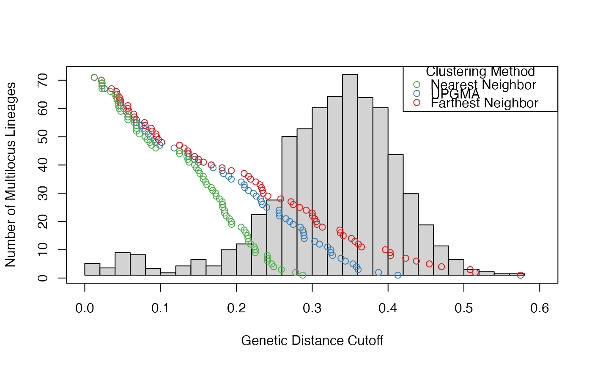
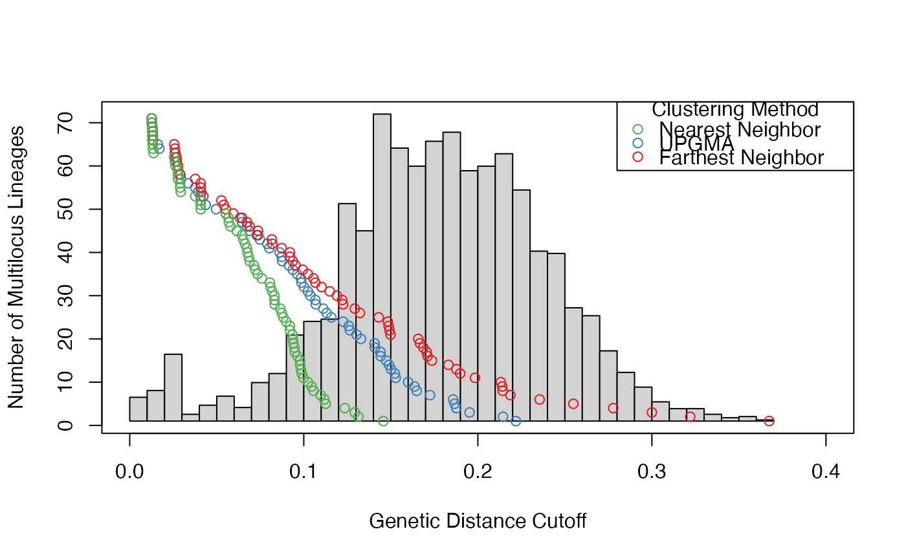

This function is a wrapper to mlg.filter. It will calculate all of the stats for mlg.filter utilizing all of the algorithms.
Usage
filter_stats(
x,
distance = bitwise.dist,
threshold = 1e+06 + .Machine$double.eps^0.5,
stats = "All",
missing = "ignore",
plot = FALSE,
cols = NULL,
nclone = NULL,
hist = "Scott",
threads = 1L,
...
)Arguments
- x
- distance
a distance function or matrix
- threshold
a threshold to be passed to
mlg.filter(Default: 1e6)- stats
what statistics should be calculated.
- missing
how to treat missing data with mlg.filter
- plot
If the threshold is a maximum threshold, should the statistics be plotted (Figure 2)
- cols
the colors to use for each algorithm (defaults to set1 of RColorBrewer).
- nclone
the number of multilocus genotypes you expect for the data. This will draw horizontal line on the graph at the value nclone and then vertical lines showing the cutoff thresholds for each algorithm.
- hist
if you want a histogram to be plotted behind the statistics, select a method here. Available methods are "sturges", "fd", or "scott" (default) as documented in
hist. If you don't want to plot the histogram, sethist = NULL.- threads
(unused) Previously the number of threads to be used. As of poppr version 2.4.1, this is by default set to 1.
- ...
extra parameters passed on to the distance function.
Value
a list of results from mlg.filter from the three
algorithms. (returns invisibly if plot = TRUE)
Note
This function originally appeared in doi:10.5281/zenodo.17424
References
ZN Kamvar, JC Brooks, and NJ Grünwald. 2015. Supplementary Material for Frontiers Plant Genetics and Genomics 'Novel R tools for analysis of genome-wide population genetic data with emphasis on clonality'. DOI: doi:10.5281/zenodo.17424
Kamvar ZN, Brooks JC and Grünwald NJ (2015) Novel R tools for analysis of genome-wide population genetic data with emphasis on clonality. Front. Genet. 6:208. doi: doi:10.3389/fgene.2015.00208
Examples
# Basic usage example: Bruvo's Distance --------------------------------
data(Pinf)
pinfreps <- fix_replen(Pinf, c(2, 2, 6, 2, 2, 2, 2, 2, 3, 3, 2))
bres <- filter_stats(Pinf, distance = bruvo.dist, replen = pinfreps, plot = TRUE, threads = 1L)

print(bres) # shows all of the statistics
#> $farthest
#> $farthest$MLGS
#> [1] 1 1 1 1 1 1 1 1 1 1 1 1 1 1 1 1 1 1 1 1 1 1 1 1 1 1 1 1 1 1 1 1 1 1 1 1 1 1
#> [39] 1 1 1 1 1 1 1 1 1 1 1 1 1 1 1 1 1 1 1 1 1 1 1 1 1 1 1 1 1 1 1 1 1 1 1 1 1 1
#> [77] 1 1 1 1 1 1 1 1 1 1
#>
#> $farthest$THRESHOLDS
#> [1] 0.01262626 0.02189867 0.02272727 0.02272727 0.03535354 0.04166667
#> [7] 0.04261364 0.04545454 0.04699337 0.04758520 0.05681818 0.05681818
#> [13] 0.05835701 0.06451231 0.06534091 0.06818182 0.07871686 0.07954545
#> [19] 0.08772748 0.08877841 0.09375000 0.09469697 0.09722222 0.10144413
#> [25] 0.12500000 0.13099747 0.13593750 0.13740234 0.14488636 0.15000000
#> [31] 0.15656566 0.16688366 0.18115234 0.19317072 0.21022726 0.21590909
#> [37] 0.21874983 0.22561553 0.23115234 0.23295450 0.23437499 0.23532197
#> [43] 0.24147723 0.25850032 0.27201702 0.27500000 0.28338066 0.29208984
#> [49] 0.30000000 0.30042336 0.30326990 0.30549961 0.30632250 0.31325684
#> [55] 0.33639034 0.33709162 0.34089797 0.35170815 0.35619658 0.36079233
#> [61] 0.36487924 0.39646464 0.40280346 0.40332030 0.42325106 0.43731965
#> [67] 0.45436164 0.47047212 0.50827603 0.51496688 0.57474140
#>
#> $farthest$DISTANCES
#> [1] 0
#>
#> $farthest$SIZES
#> [1] 86 0 0 0 0 0 0 0 0 0 0 0 0 0 0 0 0 0 0 0 0 0 0 0 0
#> [26] 0 0 0 0 0 0 0 0 0 0 0 0 0 0 0 0 0 0 0 0 0 0 0 0 0
#> [51] 0 0 0 0 0 0 0 0 0 0 0 0 0 0 0 0 0 0 0 0 0 0 0 0 0
#> [76] 0 0 0 0 0 0 0 0 0 0 0 0 0 0 0 0 0 0 0 0 0 0 0 0 0
#> [101] 0 0 0 0 0 0 0 0 0 0 0 0 0 0 0 0 0
#>
#>
#> $average
#> $average$MLGS
#> [1] 5 5 5 5 5 5 5 5 5 5 5 5 5 5 5 5 5 5 5 5 5 5 5 5 5 5 5 5 5 5 5 5 5 5 5 5 5 5
#> [39] 5 5 5 5 5 5 5 5 5 5 5 5 5 5 5 5 5 5 5 5 5 5 5 5 5 5 5 5 5 5 5 5 5 5 5 5 5 5
#> [77] 5 5 5 5 5 5 5 5 5 5
#>
#> $average$THRESHOLDS
#> [1] 0.01262626 0.02189867 0.02272727 0.02272727 0.02588384 0.04166667
#> [7] 0.04261364 0.04545454 0.04551373 0.04666785 0.04758520 0.05116596
#> [13] 0.05455269 0.05681818 0.05681818 0.06534091 0.06818182 0.07469704
#> [19] 0.07765152 0.07954545 0.08386600 0.08664773 0.09154040 0.09375000
#> [25] 0.09904513 0.11783635 0.12500000 0.13593750 0.13740234 0.14488636
#> [31] 0.15000000 0.16688366 0.16922082 0.18115234 0.18281241 0.18983100
#> [37] 0.19317072 0.20648526 0.21022726 0.21098306 0.21590909 0.22248151
#> [43] 0.22604322 0.23175203 0.23294795 0.23437497 0.23998000 0.25621032
#> [49] 0.25625000 0.25680394 0.26530388 0.27031250 0.27487891 0.28437722
#> [55] 0.28752245 0.28876394 0.28902416 0.28944244 0.30326990 0.30955902
#> [61] 0.32030666 0.32450982 0.32465378 0.32678465 0.33795507 0.34365982
#> [67] 0.35371480 0.35817752 0.36059225 0.38745409 0.41290311
#>
#> $average$DISTANCES
#> [1] 0
#>
#> $average$SIZES
#> [1] 0 0 0 0 86 0 0 0 0 0 0 0 0 0 0 0 0 0 0 0 0 0 0 0 0
#> [26] 0 0 0 0 0 0 0 0 0 0 0 0 0 0 0 0 0 0 0 0 0 0 0 0 0
#> [51] 0 0 0 0 0 0 0 0 0 0 0 0 0 0 0 0 0 0 0 0 0 0 0 0 0
#> [76] 0 0 0 0 0 0 0 0 0 0 0 0 0 0 0 0 0 0 0 0 0 0 0 0 0
#> [101] 0 0 0 0 0 0 0 0 0 0 0 0 0 0 0 0 0
#>
#>
#> $nearest
#> $nearest$MLGS
#> [1] 4 4 4 4 4 4 4 4 4 4 4 4 4 4 4 4 4 4 4 4 4 4 4 4 4 4 4 4 4 4 4 4 4 4 4 4 4 4
#> [39] 4 4 4 4 4 4 4 4 4 4 4 4 4 4 4 4 4 4 4 4 4 4 4 4 4 4 4 4 4 4 4 4 4 4 4 4 4 4
#> [77] 4 4 4 4 4 4 4 4 4 4
#>
#> $nearest$THRESHOLDS
#> [1] 0.01262626 0.02189867 0.02272727 0.02272727 0.02272727 0.03409091
#> [7] 0.03977273 0.04166667 0.04261364 0.04403409 0.04403409 0.04545454
#> [13] 0.04758520 0.05681818 0.05681818 0.05681818 0.06534091 0.06818182
#> [19] 0.06818182 0.06818182 0.07196970 0.07954545 0.08238636 0.08585859
#> [25] 0.08838384 0.09375000 0.12480469 0.12500000 0.13470642 0.13593750
#> [31] 0.13740234 0.14488636 0.14687500 0.15000000 0.15190972 0.15625000
#> [37] 0.15625000 0.15932617 0.16102431 0.16688366 0.16879735 0.17274306
#> [43] 0.17329545 0.17768012 0.18115234 0.18181817 0.18181818 0.18417969
#> [49] 0.18437500 0.18661804 0.19062500 0.19317072 0.19375000 0.20625000
#> [55] 0.21022726 0.21240234 0.21484375 0.21527778 0.21590284 0.21874717
#> [61] 0.22348731 0.22490234 0.22490234 0.24062500 0.24105025 0.24113755
#> [67] 0.24667968 0.24912939 0.25923295 0.27812500 0.28737792
#>
#> $nearest$DISTANCES
#> [1] 0
#>
#> $nearest$SIZES
#> [1] 0 0 0 86 0 0 0 0 0 0 0 0 0 0 0 0 0 0 0 0 0 0 0 0 0
#> [26] 0 0 0 0 0 0 0 0 0 0 0 0 0 0 0 0 0 0 0 0 0 0 0 0 0
#> [51] 0 0 0 0 0 0 0 0 0 0 0 0 0 0 0 0 0 0 0 0 0 0 0 0 0
#> [76] 0 0 0 0 0 0 0 0 0 0 0 0 0 0 0 0 0 0 0 0 0 0 0 0 0
#> [101] 0 0 0 0 0 0 0 0 0 0 0 0 0 0 0 0 0
#>
#>
# Use these results with cutoff_filter()
print(thresh <- cutoff_predictor(bres$farthest$THRESHOLDS))
#> [1] 0.1132221
mlg.filter(Pinf, distance = bruvo.dist, replen = pinfreps) <- thresh
Pinf
#>
#> This is a genclone object
#> -------------------------
#> Genotype information:
#>
#> 48 contracted multilocus genotypes
#> (0.113) [t], (bruvo.dist) [d], (farthest) [a]
#> 86 tetraploid individuals
#> 11 codominant loci
#>
#> Population information:
#>
#> 2 strata - Continent, Country
#> 2 populations defined - South America, North America
# Different distances will give different results -----------------------
nres <- filter_stats(Pinf, distance = nei.dist, plot = TRUE, threads = 1L, missing = "mean")
#>
#> Replaced 167 missing values.
#> Warning: @tab does not contain integers; as of adegenet_2.0-0, numeric values are no longer used
#> Warning: @tab does not contain integers; as of adegenet_2.0-0, numeric values are no longer used

print(thresh <- cutoff_predictor(nres$farthest$THRESHOLDS))
#> [1] 0.01949039
mlg.filter(Pinf, distance = nei.dist, missing = "mean") <- thresh
Pinf
#>
#> This is a genclone object
#> -------------------------
#> Genotype information:
#>
#> 66 contracted multilocus genotypes
#> (0.019) [t], (nei.dist) [d], (farthest) [a]
#> 86 tetraploid individuals
#> 11 codominant loci
#>
#> Population information:
#>
#> 2 strata - Continent, Country
#> 2 populations defined - South America, North America